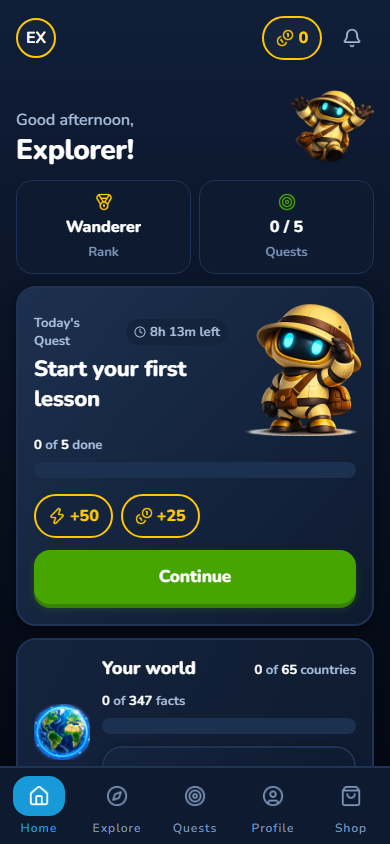
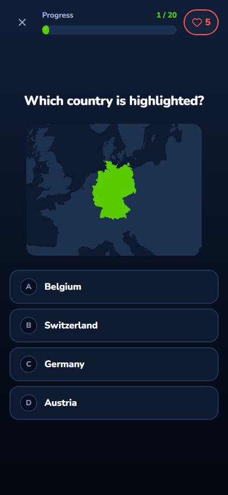
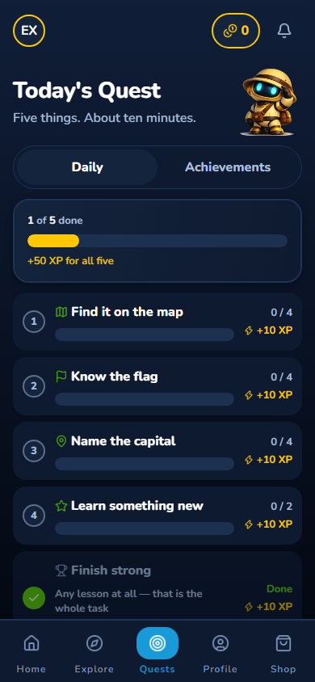
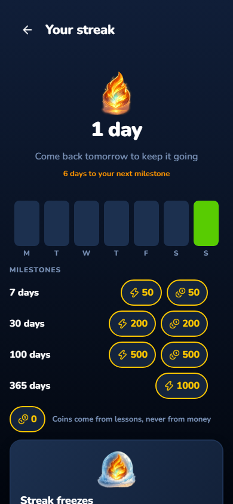
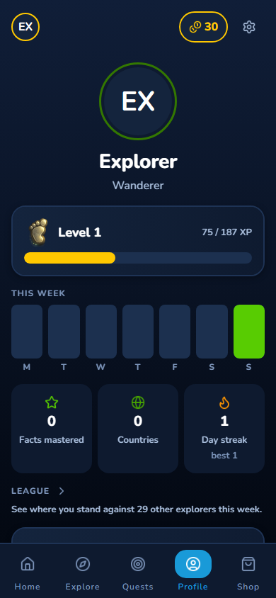
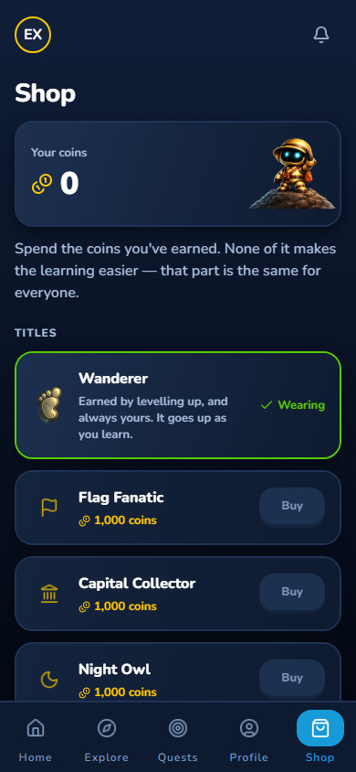
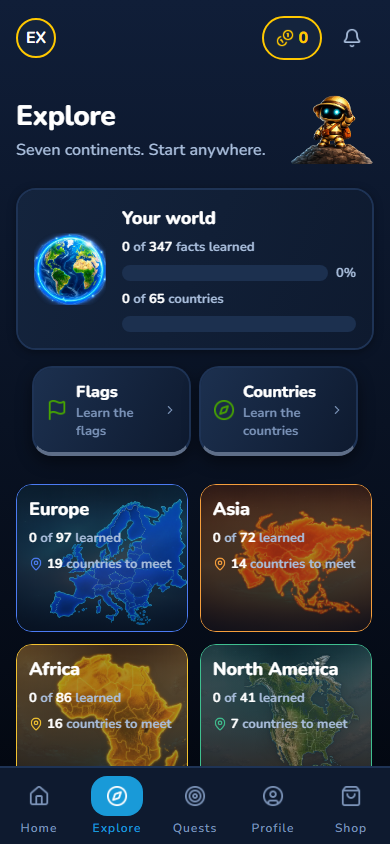
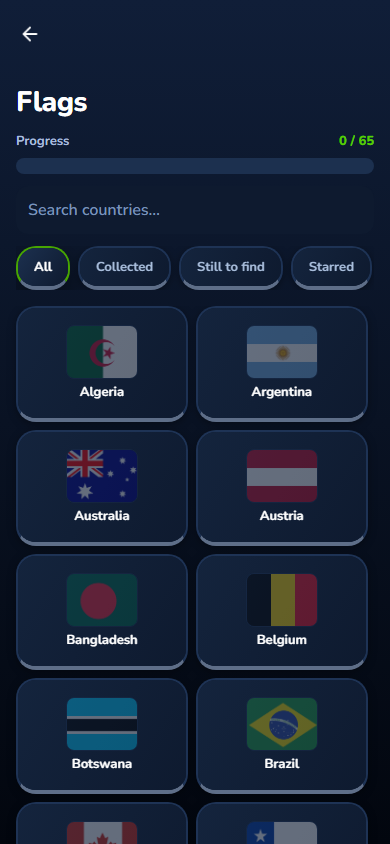
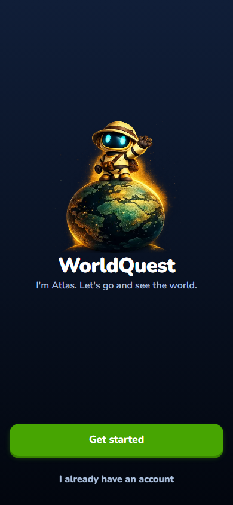
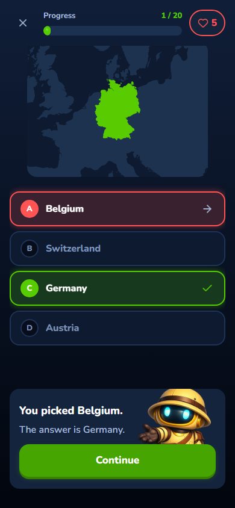

Rendered from the real bundle at 390 pt by pnpm design:shots
(156 route shots at 320/390/768, plus 102 flow shots for the screens that are
states rather than routes). These are a web render, so they show layout, copy
and tokens — not physical-device behaviour. Native evidence is the iOS/Android
account proof run.

HomeCoins, rank, today's quest card, world progress. The quest is the primary action; shop is last.

LessonMap question, four options, hearts and 1/20 progress. One primary action, answers at thumb height.

Today's QuestThe five canonical slots, +10 XP each and +50 for all five — the numbers the server-side payout now pays from.

StreakDay count, week strip, milestones and the freeze panel. Milestones are the only place coins are shown before the shop.

ProfileLevel and XP curve, the week strip, facts/countries/streak, and the league line.

ShopTitles bought with earned coins, with the standing promise that nothing here makes the learning easier.

ExploreBrowse the geography content by region.

CollectionFlags collected so far — the completion surface.

OnboardingThe welcome step. One decision per screen, mandatory privacy choices kept out of the way.

Wrong answerA gentle settle, the right answer, no red flash and no buzzer — the lesson feedback state.